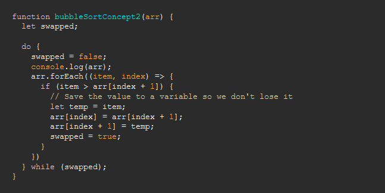

Пузырьковая сортировка на JavaScript
Пузырьковая сортировка – один из самых широко обсуждаемых (и несовершенных) алгоритмов. Если массив уже отсортирован, то алгоритм пройдется по нему только один раз. Однако в худшем сценарии количество операций будет O(N²), что крайне неэффективно.

Даже Барак Обама однажды признал неэффективность сортировки пузырьком.
Если нарисовать график роста количества операций в зависимости от размера массива, то мы увидим, что по сравнению другими алгоритмами сортировки, такими как, например, сортировка слиянием с ее O(N Log N), сортировка пузырьком растет значительно быстрее.
Несмотря на это, просто ради практики интересно понять сам алгоритм и почему он работает так медленно.
Давайте углубимся в концепции проведения пузырьковой сортировки.
Пузырьковая сортировка: концепция 1
- Проходим по всему массиву и сравниваем текущий элемент со следующим.
- Если он больше следующего, то переставляем их местами.
- Если не больше, увеличиваем указатель и сравниваем два следующих элемента.
- Достигнув конца мы знаем, что самый большой элемент массива находится в последней позиции.
- Повторяем процесс N раз (где N – длинна массива) и каждый раз проходим до последнего отсортированного элемента.
Вот как это выглядит на практике:
Код
Для реализации такой концепции нам нужны два указателя (два вложенных цикла). Каждый раз, когда мы выполняем итерацию, верхняя граница уменьшается на единицу, поскольку мы знаем, что этот элемент уже содержит отсортированное значение.
Пузырьковая сортировка: концепция 2
- Проходим по всему массиву и сравниваем текущий элемент со следующим.
- Если текущий элемент больше следующего, меняем их местами.
- Отмечаем, что обмен произошел.
- Если обмен произошел, проходим по массиву с начала.
- Мы знаем, что массив отсортирован, когда обменов уже не будет.
Вот как это выглядит на практике:
Код
Теперь нам нужен только один указатель, так как мы используем переменную для хранения логического значения, указывающего, произошел ли обмен или нет. В отличие от первого варианта, эта концепция требует от нас обработки каждого элемента в массиве каждый раз, когда мы проходим через него.
Время выполнения
Пузырьковая сортировка – один из самых неэффективных алгоритмов с количеством операций O(N²). В худшем случае вам придется сравнивать каждый элемент со всеми другими в массиве, так что времени на это уйдет предостаточно. Но теперь вы знакомы с этим алгоритмом и вряд ли будете использовать его в своих проектах.